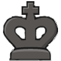
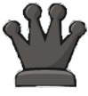
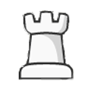
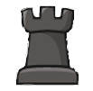
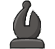
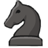
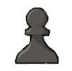

| Rey |
El rey es la pieza más importante en el ajedrez, ya que su captura significa el fin del juego. Su principal función es protegerse a sí mismo y, al mismo tiempo, moverse estratégicamente por el tablero. El rey puede moverse en cualquier dirección, pero solo una casilla a la vez. Esto significa que puede moverse hacia adelante, hacia atrás, hacia los lados o en diagonal, siempre que la casilla a la que se mueva no esté amenazada por una pieza enemiga. Además, el rey tiene una jugada especial llamada "enroque", que le permite cambiar de posición con una de las torres para aumentar su seguridad. |
 |
| Reina |
La reina es la pieza más poderosa en el ajedrez. Puede moverse en cualquier dirección: horizontal, vertical o diagonal, y en cualquier número de casillas siempre que no estén bloqueadas por otras piezas. Esto la convierte en una pieza muy versátil y poderosa en el tablero, capaz de controlar grandes áreas y atacar múltiples direcciones simultáneamente. La reina es fundamental para ejecutar tácticas ofensivas y defensivas, y su habilidad para moverse libremente la hace crucial para controlar el centro del tablero y atacar al rey enemigo. Su versatilidad la convierte en una pieza clave en casi todas las fases del juego. |
 |
| Torre |
La torre es una pieza poderosa en el ajedrez. Se mueve en líneas rectas tanto vertical como horizontalmente a lo largo del tablero, y puede moverse cualquier número de casillas en la dirección elegida, siempre y cuando no haya ninguna otra pieza bloqueando su camino. La torre es particularmente útil para controlar columnas y filas, y es esencial en la estrategia de controlar las líneas abiertas o semilibres del tablero. Su capacidad para moverse a lo largo de estas líneas rectas la hace valiosa tanto en la defensa como en el ataque, y es especialmente poderosa cuando se combina con otras piezas, como la dama o el rey, para crear amenazas y ataques coordinados. |
 |
| Alfil |
El alfil es una pieza poderosa en el ajedrez que se mueve en diagonal a lo largo del tablero. Cada jugador comienza con dos alfiles, uno en una casilla de color claro y otro en una casilla de color oscuro. Debido a su movimiento diagonal, los alfiles siempre permanecen en el mismo color de casilla durante toda la partida. |
 |
| Caballo |
El caballo es una pieza única en el ajedrez debido a su movimiento en forma de "L". Se mueve dos casillas en una dirección, ya sea horizontal o vertical, y luego una casilla perpendicular a la dirección original. Esta peculiaridad le permite saltar sobre otras piezas en el tablero, lo que lo hace una pieza muy versátil y valiosa. |
 |
| Peón |
El peón es la pieza más abundante en el ajedrez y, aunque es la más débil en términos de movimiento y poder de ataque, puede desempeñar un papel crucial en la estrategia y táctica del juego. Los peones se mueven hacia adelante una casilla a la vez, con la excepción de su primer movimiento, en el cual pueden avanzar dos casillas. Sin embargo, capturan a las piezas enemigas diagonalmente, avanzando una casilla diagonalmente hacia adelante. |
 |